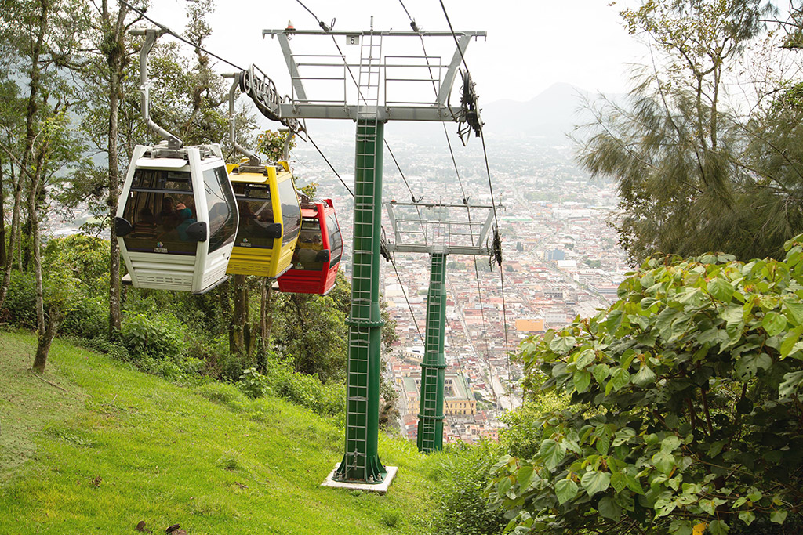
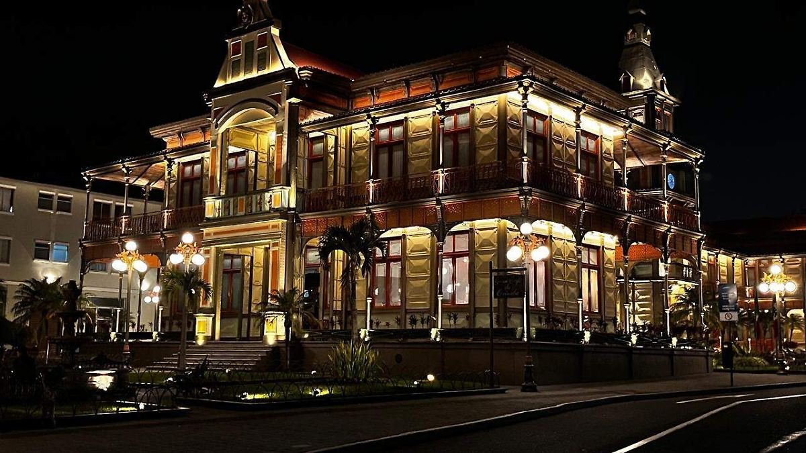
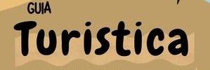

Bienvenido a Orizaba, Veracruz
Descubre los lugares más emblemáticos y vive una experiencia inolvidable.
Principales Atractivos

Teleférico de Orizaba
Disfruta de una vista espectacular desde las alturas.

Ecoparque del Río
Un hermoso paseo al aire libre rodeado de naturaleza.

Palacio de Hierro
Una joya arquitectónica con una historia fascinante.
¡Descubre más!
Explora la cultura, gastronomía y naturaleza que hacen de Orizaba un destino único.
